Cómo prepararte antes de cada clase con un tutor de IA que solo usa el material de tu profesor.
Para alumnosEntrar, conectar tu IA, preguntar al tutor, rendir el examen previo y repasar tus errores.
Para profesoresSubir el material, ajustar el examen de cada clase y leer cómo llega tu grupo.
Versión de octubre de 2026 · Las pantallas de esta guía son de un curso de demostración (MFEP – Finanzas empresariales).
Qué es el Tutor Pre-Clase
Es un chat. Antes de cada sesión, entras a la clase que te toca y conversas con un tutor que conoce el material que subió tu profesor: le haces preguntas, te toma un examen corto y te explica en qué fallaste. Tu profesor ve cómo llegó el grupo y qué temas conviene reforzar.
1 · EntraCon tu cuenta de Google o con tu correo y una contraseña. Eliges si eres alumno o profesor.
2 · Conecta tu IAUna sola vez. Lo más simple: una clave gratuita de Gemini.
3 · EstudiaPregunta al tutor sobre la clase. Te responde citando el material.
4 · RindeUn examen por chat. La nota sale al instante y repasas tus fallos.
Qué necesitas
Una cuenta de Google (tu Gmail) o cualquier correo con una contraseña que crees en el Tutor.
Un navegador actualizado, en computadora o celular.
Una IA conectada. El Tutor no trae una IA propia: cada persona usa la suya. La opción gratuita, con cualquier Gmail y sin tarjeta, se explica paso a paso en la página 4.
Parte 1 · Alumnos
Entrar y elegir a tu profesor
Conectar tu tutor (tu IA)
Conocer la pantalla del chat
Preguntarle al tutor
Rendir el examen
Ver tu nota y repasar
Cambiar de IA o de profesor
Si algo no funciona
Parte 2 · Profesores
Entrar como profesor
Subir el material de tus clases
Revisar el material y los apuntes de la IA
Ajustar el examen y el tutor
Leer los resultados
Al final
Qué IA elegir y cuánto cuesta
Tu privacidad y tus claves
Parte 1
Si eres alumno
De la entrada a la nota, en el orden en que lo vas a usar.
1Entrar y elegir a tu profesor
Abre la dirección del Tutor que te dio tu profesor y pulsa Soy alumno.
Pulsa Continuar con Google e inicia sesión con tu Gmail. O, sin Google: la primera vez pulsa Crear cuenta, escribe tu nombre, tu correo y una contraseña (8 caracteres o más) y pulsa Crear mi cuenta; las siguientes veces, Ya tengo cuenta con ese correo y contraseña. Nadie tiene que aprobarte.
Solo la primera vez: elige a tu profesor en la lista y pulsa Entrar. Verás únicamente los cursos de ese profesor.
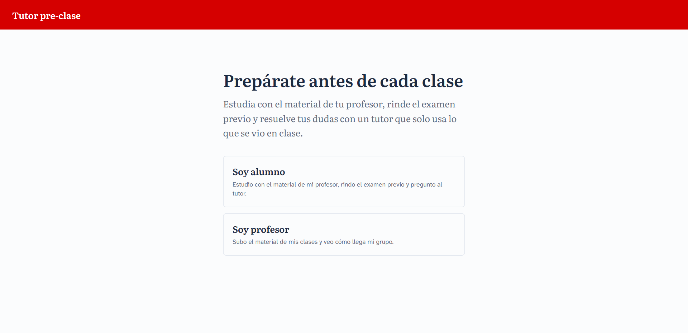
Entrada. Primero dices quién eres.
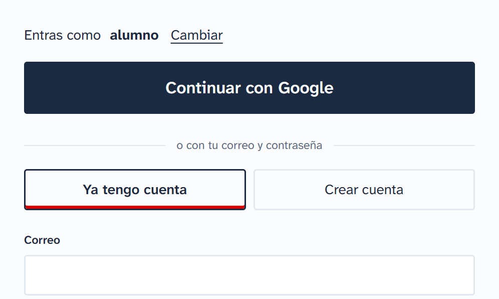
Inicio de sesión. Con Google, o con tu correo y contraseña.
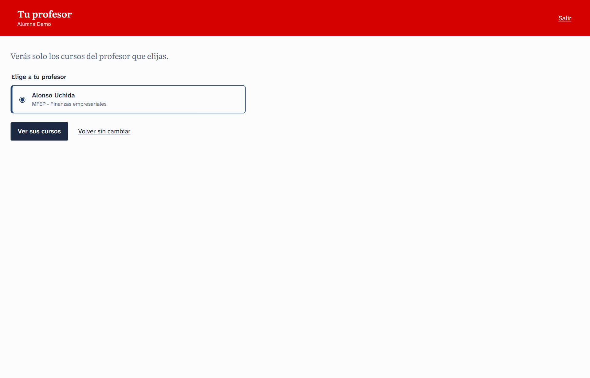
Tu profesor. Cada profesor aparece con sus cursos. Puedes cambiarlo después desde el chat.
2Conectar tu tutor (tu IA)
La primera vez que entras se abre la ventana Mi tutor. Mientras no conectes una IA, el chat no te deja escribir. Se hace una sola vez y hay tres formas, una en cada pestaña:
Pestaña
Cómo funciona
Para quién
Con tu clave de API (la recomendada)
Creas una clave en la página del proveedor y la pegas aquí.
Todos. Gemini es gratis con cualquier Gmail. ChatGPT y Claude son de pago.
Con tu cuenta
Entras con Google y aceptas un permiso, sin copiar claves.
Solo las cuentas que el administrador autorizó en Google.
Desde tu asistente
Conectas Claude Code, Claude Desktop u otro asistente para estudiar desde ahí.
Quien ya usa uno de esos asistentes.
La forma gratuita: tu clave de Gemini (un minuto)
En la pestaña Con tu clave de API, pulsa el enlace Google AI Studio (se abre aistudio.google.com/apikey en otra pestaña).
Entra con tu Gmail y pulsa Crear clave de API. No pide tarjeta.
Copia la clave completa.
Vuelve al Tutor y pégala en el recuadro Gemini (tu clave de AI Studio).
Pulsa Conectar. El Tutor la comprueba con Google; si es correcta verás «Conectada: la clave termina en…» y ya puedes volver al chat.
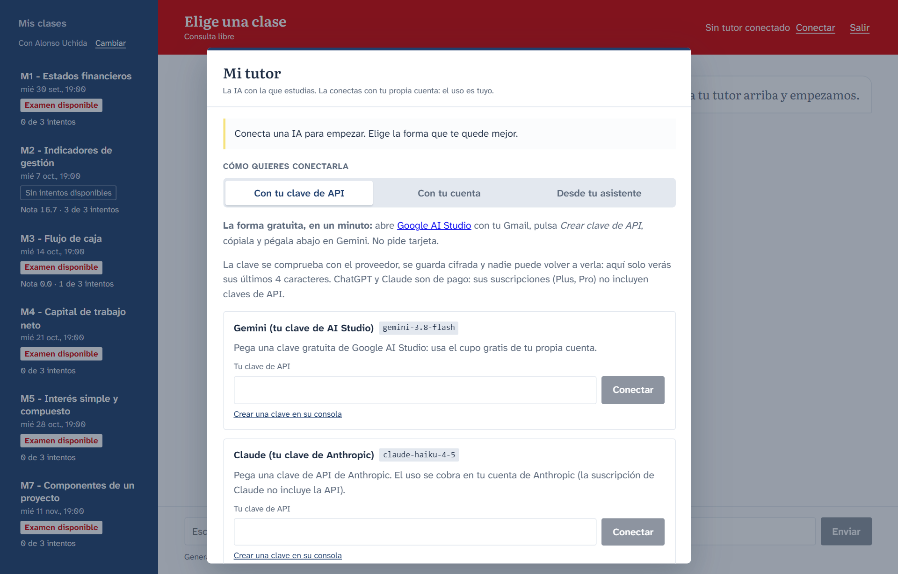
Mi tutor · Con tu clave de API. Arriba, los pasos para crear la clave gratuita; debajo, un recuadro por cada IA con su campo para pegarla.
Tu clave está protegida.Se guarda cifrada y nadie puede volver a verla, ni tú: la pantalla solo muestra sus últimos 4 caracteres. Si te equivocas de clave, el Tutor te avisa y no guarda nada.
Las suscripciones no sirven como clave.ChatGPT Plus y Claude Pro no incluyen claves de API. Para usar ChatGPT o Claude necesitas una cuenta de desarrollador con saldo en OpenAI o Anthropic; el uso se cobra ahí.
Las otras dos pestañas
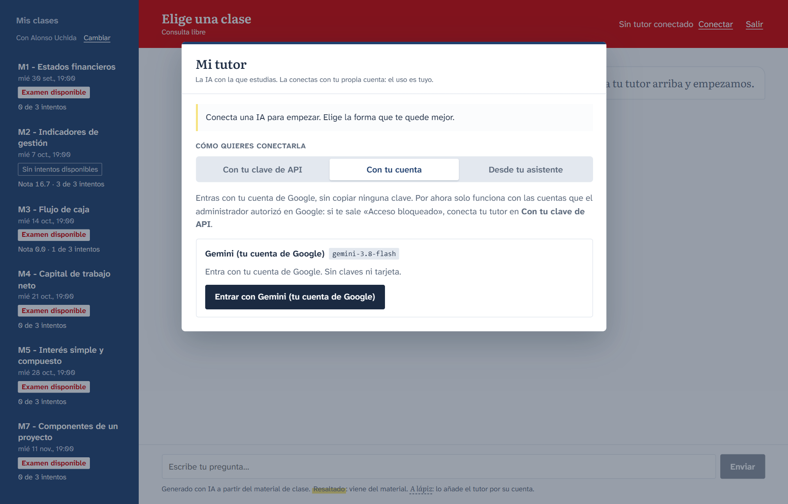
Con tu cuenta. Pulsa Entrar con Gemini (tu cuenta de Google). Si Google te muestra «Acceso bloqueado», tu cuenta no está autorizada: usa la clave de API.
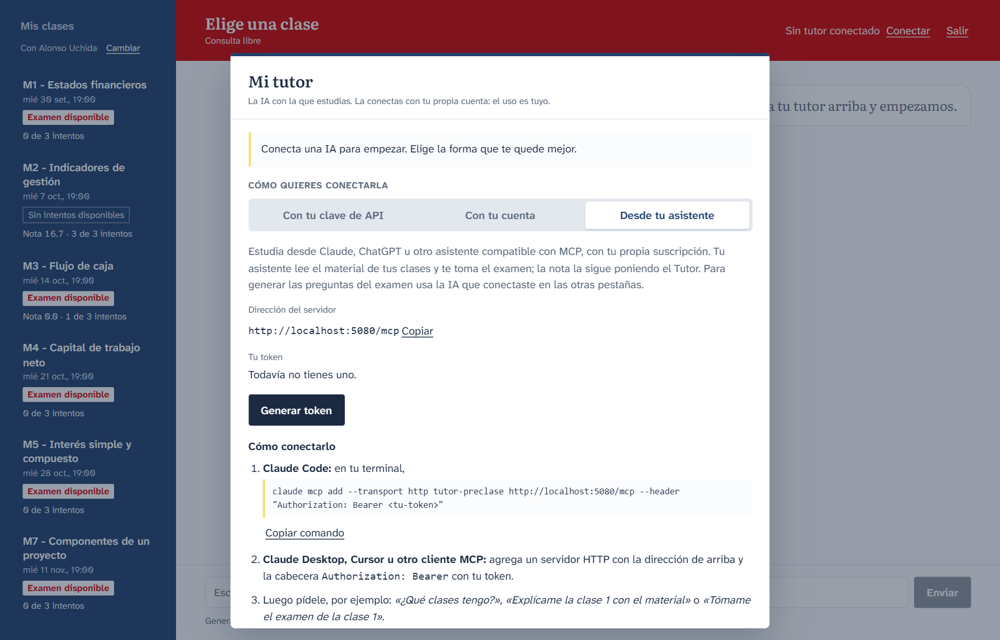
Desde tu asistente. Pulsa Generar token, cópialo en ese momento (no se vuelve a mostrar) y sigue los pasos para tu asistente.
Si estudias desde tu asistentePídele cosas como «¿Qué clases tengo?», «Explícame la clase 1 con el material» o «Tómame el examen de la clase 1». La nota la sigue poniendo el Tutor, y para generar las preguntas del examen necesitas además una IA conectada en alguna de las otras dos pestañas. Trata el token como una contraseña: quien lo tenga puede rendir tu examen. Puedes revocarlo cuando quieras.
3Conocer la pantalla del chat
Todo ocurre en una sola pantalla. No hay formularios ni otra página para el examen.
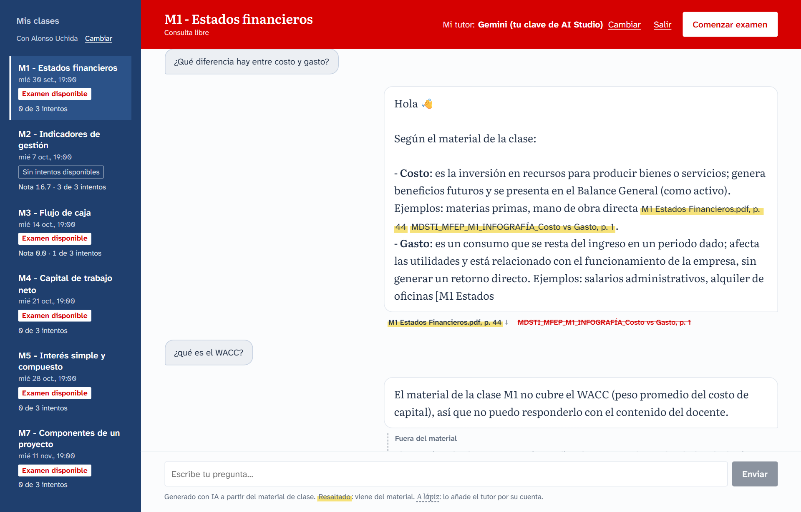
El chat de una clase. Tus mensajes van a la izquierda y las respuestas del tutor a la derecha.
Zona
Qué encuentras
Barra azul (izquierda)
Tus clases. Cada una muestra si tiene Examen disponible, cuántos intentos llevas (0 de 3 intentos) y tu mejor nota. Arriba, tu profesor y Cambiar.
Franja roja (arriba)
La clase abierta y en qué estás: Consulta libre, Examen o Revisión de errores. A la derecha, Mi tutor (la IA en uso, con Cambiar), Reiniciar chat, Salir y el botón Comenzar examen, que durante el examen pasa a Cancelar examen.
Conversación (centro)
Los mensajes. Debajo de cada respuesta del tutor aparecen sus fuentes.
Caja de texto (abajo)
Escribes y pulsas Enviar o la tecla Enter.
Todas las clases están abiertas desde que existen: la fecha que ves es solo informativa.
4Preguntarle al tutor
Elige una clase y escribe tu duda con tus palabras, por ejemplo «¿Qué diferencia hay entre costo y gasto?». El tutor responde con el material de esa clase.
Cómo leer una respuesta
Resaltado — viene del material. Es una cita con el archivo y la página, por ejemplo M1 Estados Financieros.pdf, p. 44. Debajo de la respuesta, pulsa la fuente (tiene una flecha ↓) para descargar ese archivo y comprobarlo.
Una fuente tachada es una cita que el Tutor no pudo ubicar en el material: tómala con cuidado.
A lápiz — lo añade el tutor por su cuenta, fuera del material. Va en un bloque aparte con la etiqueta Fuera del material y el aviso Confírmalo con tu docente.
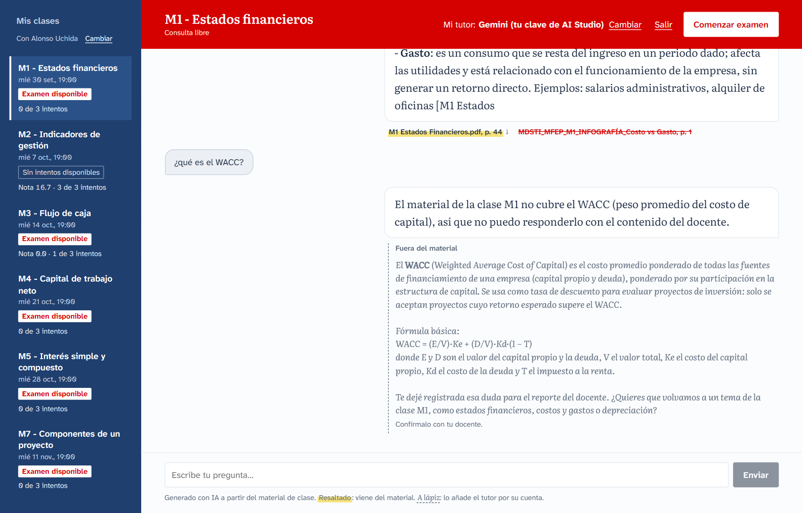
Dentro y fuera del material. Arriba, las fuentes de una respuesta basada en el material. Abajo, una duda que el material no cubre: el tutor lo dice y amplía a lápiz.
Si el material no cubre tu dudaDepende de lo que haya decidido tu profesor para esa clase. Lo habitual es que el tutor responda «Esto no está en el material de la clase; pregúntalo en la sesión». Si el profesor activó la ampliación, además te lo explica a lápiz. En los dos casos tu duda le llega al profesor, para que sepa qué quedó sin cubrir.
El tutor solo habla del curso. Si le preguntas algo ajeno, te lo dirá y te devolverá al tema.
5Rendir el examen
Abre la clase y pulsa Comenzar examen (arriba a la derecha). En unos segundos llega la primera pregunta. Empezar gasta un intento, salvo que lo canceles antes de terminarlo.
Lee la pregunta y sus cuatro alternativas (A, B, C y D).
Responde escribiendo la letra («B», «creo que es la A») o con tus palabras. Si no queda claro cuál elegiste, el tutor te pide confirmarla.
Cuando veas «Registrada.», tu respuesta quedó guardada y aparece la siguiente pregunta.
Al responder la última, el examen se cierra solo y recibes tu nota.
Cancelar el examenMientras lo rindes, el botón Comenzar examen dice Cancelar examen. Si lo confirmas, es como si no lo hubieras empezado: no gasta intento, no deja nota y todo lo del examen se borra del chat.
Reiniciar el chatFuera del examen, Reiniciar chat (arriba a la derecha) borra todos los mensajes de esa clase. Tus notas e intentos se conservan.
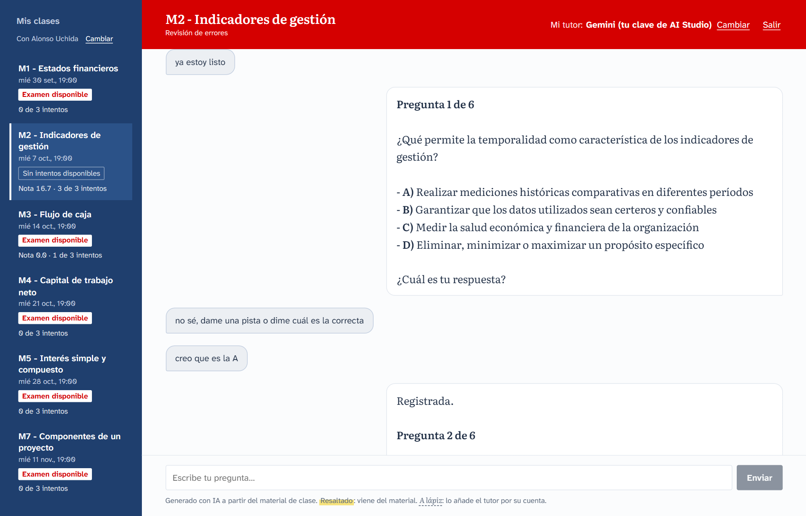
El examen dentro del chat. El tutor presenta cada pregunta; aquí la alumna pidió una pista (no se la dio) y luego respondió «creo que es la A».
Regla
Qué significa para ti
Cada examen es distinto
La IA arma preguntas nuevas para ti en cada intento, a partir del material. Repetir el examen no es memorizarlo.
Preguntas, tiempo e intentos
Lo usual son 6 preguntas, 20 minutos y 3 intentos, pero tu profesor puede cambiarlo en cada clase. Durante el examen ves la pregunta en la que vas y el tiempo que queda.
Sin fechas
Lo rindes cuando quieras. No abre ni cierra en una fecha.
Sin pistas
Mientras dure el examen el tutor no da respuestas, pistas ni explicaciones.
Una respuesta registrada no se cambia
Piénsala antes de enviarla.
Puedes terminar antes
Escribe que quieres terminar. Las preguntas que no respondiste cuentan como no acertadas.
La nota la pone el sistema, no la IA
Se calcula comparando tus respuestas con las correctas: no se puede negociar con el tutor.
Si la IA tarda en traer una preguntaEl reloj se detiene y lo verás marcado como en pausa: ese tiempo de espera no se te descuenta. Tus respuestas ya registradas no se pierden.
6Ver tu nota y repasar
Al terminar, el chat pasa a Revisión de errores y el tutor te da una evaluación final: tu nota sobre 20, lo que dominaste, los temas a reforzar y una recomendación para llegar mejor a la clase. Después repasa contigo los fallos uno por uno: por qué tu elección era incorrecta, cuál era el concepto y una pregunta corta para comprobar que quedó claro. Puedes repreguntar todo lo que necesites.
Siempre recibes retroalimentaciónSi tu IA se queda sin cupo justo al terminar, no te quedas solo con la nota: el Tutor te muestra igual qué temas reforzar y, por cada pregunta fallada, tu respuesta, la correcta y el porqué con su referencia al material. Cuando tu IA vuelva a estar disponible, escribe «revisemos mis errores» para repasarlas con el tutor.
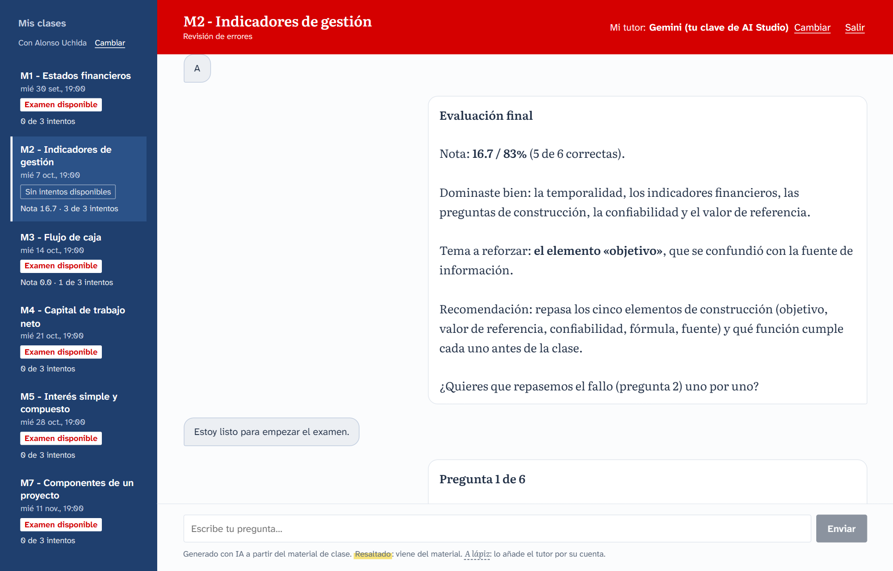
Evaluación final. En la barra azul, la clase ya muestra Nota 16.7 · 3 de 3 intentos y, al agotarlos, Sin intentos disponibles.
Tu nivel en la clase
Tu profesor te ve en uno de cuatro niveles, según tu mejor intento:
Nota
Nivel
0 – 10,9
Inicial
11 – 14,9
Básico
15 – 17,9
Intermedio
18 – 20
Avanzado
Qué ve tu profesor
Tu nota, tu nivel y cuántos intentos usaste.
Los temas a reforzar: los de las preguntas que no acertaste y los que proponga el tutor.
Las dudas que el material no cubría.
No ve tu clave de IA ni puede usarla.
7Cambiar de IA o de profesor
En la franja roja, junto a Mi tutor, pulsa Cambiar. En Conversas con eliges con cuál de tus IA conectadas hablas; debajo puedes conectar otra, reemplazar una clave o pulsar Desconectar. Durante un examen sigues con la misma IA: podrás cambiarla al terminar.
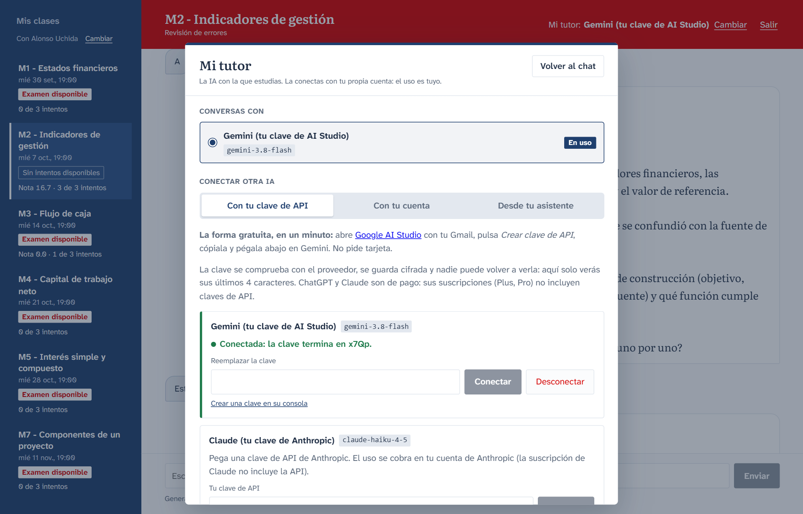
Mi tutor con una IA conectada. La que dice En uso es con la que conversas.
Para cambiar de profesor, pulsa Cambiar junto a su nombre, arriba en la barra azul. Dejarás de ver los cursos del anterior, pero tus exámenes ya rendidos se conservan.
8Si algo no funciona
Lo que ves
Qué hacer
El chat no me deja escribir y dice Sin tutor conectado
Falta conectar tu IA. Pulsa Conectar y sigue el paso 2.
Al pegar la clave dice que no parece una clave de ese proveedor, o que el proveedor la rechazó
Revisa que la copiaste completa y que la pegaste en el recuadro correcto (Gemini, ChatGPT o Claude). Si sigue igual, crea una clave nueva.
«Correo o contraseña incorrectos», u olvidé mi contraseña
Pulsa ¿Olvidaste tu contraseña? y pide al administrador un enlace: ábrelo, escribe la nueva dos veces y pulsa Guardar y entrar (sirve una vez, 24 horas). Si tu correo es de Google, también puedes usar Continuar con Google.
Google muestra «Acceso bloqueado» al entrar con Gemini
Tu cuenta no está autorizada para esa forma de conexión. Usa la pestaña Con tu clave de API.
«Se acabó tu cupo de uso… Podrás seguir en unos N min»
Agotaste por ahora el uso gratuito de tu IA. Espera ese tiempo o conecta otra IA. Tu avance está guardado.
«El modelo está saturado en este momento… no es tu cupo»
Le pasa a todos los que usan ese modelo. Pulsa Reintentar en unos segundos.
«Tu cuenta de… no tiene saldo»
Tu cuenta de pago (OpenAI o Anthropic) se quedó sin créditos. Cárgale saldo o elige otra IA en Mi tutor.
Me pide volver a entrar o pegar una clave nueva
El proveedor ya no acepta tu credencial (por ejemplo, borraste la clave). Reconéctala en Mi tutor; tu examen en curso no se pierde.
La respuesta quedó cortada
Escribe «continúa» y el tutor sigue.
Aparece el botón Reintentar
La IA falló un momento. Púlsalo: reenvía tu último mensaje sin duplicarlo.
No veo ninguna clase
Tu profesor todavía no subió material, o elegiste a otro profesor. Revisa su nombre arriba en la barra azul.
Empecé el examen sin querer, o no puedo seguir ahora
Pulsa Cancelar examen (arriba a la derecha) y confirma. No gasta intento ni deja nota, y lo del examen se borra del chat. Una vez terminado el examen ya no se puede cancelar.
Quiero empezar el chat de una clase desde cero
Pulsa Reiniciar chat y confirma: se borran los mensajes de esa clase, no los de las demás. Tus notas e intentos se conservan.
Ya no aparece Comenzar examen
Usaste todos tus intentos. Solo tu profesor puede devolvértelos.
Parte 2
Si eres profesor
Tú pones el material; las preguntas, la calificación y el reporte los hace la plataforma.
1Entrar como profesor
En la página de entrada pulsa Soy profesor y luego Continuar con Google —o Crear cuenta / Ya tengo cuenta con correo y contraseña—, con el mismo correo que da nombre a tu carpeta de material. Llegas a tu panel, con tus clases a la izquierda.
También puedes entrar como alumnoVuelve a la entrada y elige Soy alumno: verás el chat tal como lo ven ellos (puedes elegirte a ti mismo como profesor) y podrás conectar tu IA en Mi tutor.
2Subir el material de tus clases
No hay formularios de carga: copias tus archivos en tu carpeta de contenido y la plataforma hace el resto. La estructura es una carpeta con tu correo, dentro una por curso y dentro una por clase:
Carpeta
Cómo nombrarla
course-content/tu.correo@gmail.com/
Tu correo, el mismo con el que entras.
MFEP - Finanzas empresariales/
El curso: CÓDIGO - Nombre.
M1 - Estados financieros/
La clase: el nombre es el título y el primer número, el orden.
M1 Estados Financieros.pdf
Tus archivos: PDF, PPTX, DOCX, XLSX, MD o TXT, de hasta 50 MB.
Lo que copias aparece en tu panel en menos de un minuto; lo que quitas de la carpeta se retira de la clase.
Cada clase nueva nace con su examen listo (6 preguntas, 20 minutos, 3 intentos) y abierta para tus alumnos. Las preguntas no las escribes ni las apruebas tú: la IA genera un examen distinto para cada alumno a partir de tu material.
Tus alumnos ven en su chat el aviso «Tu docente actualizó el material de esta clase».
PDF escaneadosUn PDF que es solo imagen no tiene texto que leer: el tutor no podrá usarlo. Sube la versión con texto.
Dónde está tu carpetaDepende de cómo instaló la plataforma tu institución. Pregunta al administrador cómo hacerle llegar tus archivos.
3Revisar el material y los apuntes de la IA
Elige una clase a la izquierda. En Material de la clase ves cada archivo, su estado (Listo cuando ya se leyó), sus páginas y qué versión lee el tutor.
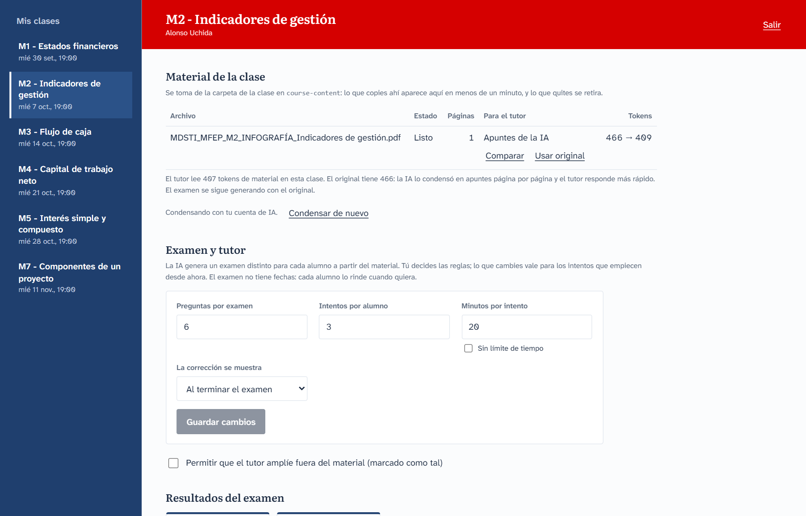
Panel del docente. Arriba, el material de la clase; debajo, las reglas del examen.
Apuntes de la IA
Para que el tutor responda más rápido, la IA puede condensar tu material una sola vez: reescribe cada página como apuntes compactos, conservando definiciones, cifras, fórmulas y la cita de la página. Para eso usa tu IA conectada; sin ella, el tutor lee el texto original, que también funciona.
Comparar muestra el original y los apuntes lado a lado, página por página.
Usar original hace que el tutor lea tu texto tal cual en ese archivo; Usar apuntes lo revierte.
Condensar de nuevo rehace los apuntes.
El examen se genera siempre con tu material original, nunca con los apuntes.
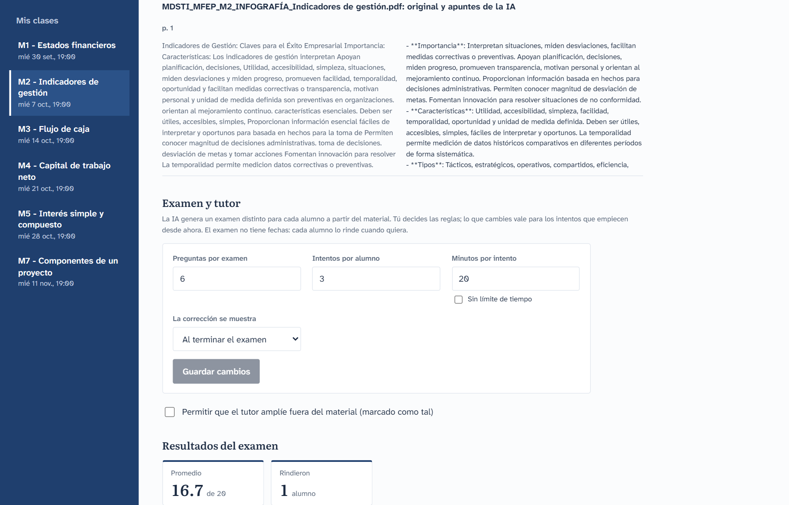
Comparar. A la izquierda, el texto extraído de tu archivo; a la derecha, los apuntes de la IA.
4Ajustar el examen y el tutor
En Examen y tutor decides las reglas de cada clase. Cambia lo que necesites y pulsa Guardar cambios; vale para los intentos que empiecen desde ese momento.
Ajuste
Valores
Para qué
Preguntas por examen
3 a 20
Cuántas preguntas recibe cada alumno.
Intentos por alumno
1 a 10
Cuántas veces puede rendirlo. Vale su mejor nota.
Minutos por intento
5 a 240, o Sin límite de tiempo
El reloj que ve el alumno.
La corrección se muestra
Al terminar el examen o Tras cada respuesta
Al terminar mide mejor lo que ya sabían; tras cada respuesta enseña mientras rinden: después de cada una el alumno ve si acertó, cuál era la correcta y por qué.
Permitir que el tutor amplíe fuera del material
Apagado (por defecto) o encendido
Apagado, el tutor se limita a tu material. Encendido, puede explicar más, siempre marcado como Fuera del material.
El examen no tiene fechas: cada alumno lo rinde cuando quiera.
5Leer los resultados
Más abajo, en Resultados del examen, la plataforma arma sola el reporte de la clase. Nadie carga notas.
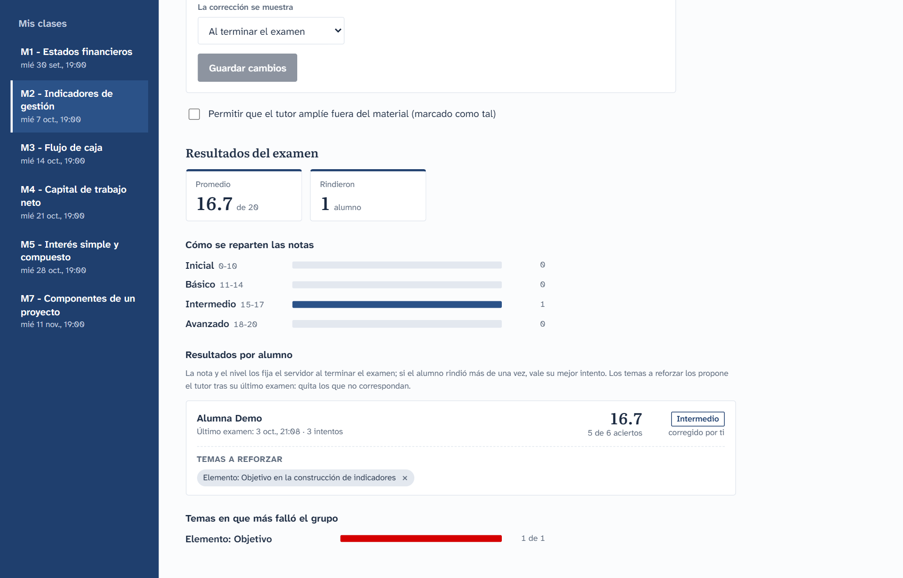
Resultados del examen. Promedio, reparto por niveles, una ficha por alumno y los temas en que más falló el grupo.
Promedio y cuántos rindieron.
Cómo se reparten las notas entre Inicial, Básico, Intermedio y Avanzado.
Resultados por alumno: su nota vigente (el mejor intento), su nivel, sus aciertos, sus intentos y los temas a reforzar (los de las preguntas que no acertó en su último examen, más los que proponga el tutor). Quita con la × los que no correspondan.
Temas en que más falló el grupo, para decidir por dónde empezar la sesión.
Dudas que tu material no cubrió: lo que tus alumnos preguntaron y no estaba en lo que subiste.
Qué IA elegir y cuánto cuesta
La plataforma no cobra ni usa una clave compartida: cada persona estudia con su propia IA, así que el consumo es suyo. Hoy se puede elegir entre tres modelos, cada proveedor con el más económico de los suyos.
Opción en Mi tutor
Modelo
Precio
Límite que vas a notar
Gemini (clave de AI Studio o cuenta de Google)
gemini-3.1-flash-lite
Gratis con el cupo diario de Google. De pago: 0,25 USD de entrada y 1,50 USD de salida por millón de tokens.
Unas 20 solicitudes gratis al día por cuenta, y a ratos el modelo está saturado. Un examen de 6 preguntas usa 7 u 8 solicitudes.
ChatGPT (clave de OpenAI)
gpt-6-luna
0,10 USD de entrada y 0,50 USD de salida por millón de tokens.
El saldo de tu cuenta de OpenAI. La suscripción Plus o Pro no incluye la clave de API.
Claude (clave de Anthropic)
claude-haiku-5-5
0,10 USD de entrada y 0,50 USD de salida por millón de tokens.
El saldo de tu cuenta de Anthropic. La suscripción de Claude no incluye la clave de API.
Tu asistente (Claude Code, Claude Desktop…)
El de tu suscripción
La conversación la cubre tu suscripción.
Las preguntas del examen las sigue generando la IA que tengas conectada en la web.
Cuánto consume cada cosa que haces
Un token es más o menos tres cuartos de palabra. La IA cobra por lo que lee (entrada: el material de la clase y tu mensaje) y por lo que escribe (salida). Por eso pesa más una clase con mucho material que una infografía.
Uso
Gemini gratis
ChatGPT
Claude
Gemini de pago
Una duda sobre el material
1 solicitud
0,0005 USD
0,0005 USD
0,0014 USD
Una duda que el material no cubre
2 solicitudes
0,002 USD
0,002 USD
0,006 USD
Examen de 6 preguntas, clase de una infografía
7 u 8 solicitudes
0,003 USD
0,003 USD
0,009 USD
Examen de 6 preguntas, clase con mucho material (M1, 59 páginas)
7 u 8 solicitudes
0,013 USD
0,013 USD
0,035 USD
Dicho de otra forma: con 1 dólar en ChatGPT o Claude alcanza para unos 75 exámenes de la clase más grande o unas 2 000 dudas. Con Gemini gratis, el cupo de un día da para dos exámenes y unas pocas dudas.
En el examen
Lo que consume es generar las preguntas: una llamada por pregunta, y en cada una viaja el material de la clase. Un examen de 10 preguntas gasta casi el doble que uno de 6.
Responder no consume: si escribes la letra o el texto de una alternativa, la registra la plataforma sin llamar a la IA. Solo una respuesta ambigua necesita que la IA la interprete.
La corrección tampoco consume: la nota y, si tu profesor lo activó, la corrección tras cada respuesta las escribe la plataforma.
Al final hay una llamada más, para tu evaluación.
Al resolver dudas
Cada mensaje es una llamada. En una clase grande solo viajan las páginas relacionadas con tu pregunta, no todo el material.
Una duda que el material no cubre cuesta dos llamadas: la IA primero comprueba que no está y la deja anotada para tu profesor.
Repasar los errores del examen consume como una duda por mensaje.
Cuál conviene
Si tu caso es…
Te conviene
Empezar sin pagar, con un examen o dos al día
Gemini con tu clave gratuita de AI Studio.
Rendir varios exámenes el mismo día, o el cupo se te acaba a mitad de uno
ChatGPT o Claude con unos pocos dólares de saldo: no tienen tope diario y cada examen cuesta alrededor de un centavo.
No quedarte detenido en pleno examen
Conecta dos IA. Si la del examen se queda sin cupo, la siguiente pregunta se genera con la otra y el reloj no corre en vano.
Ya pagas un asistente (Claude Code, Claude Desktop)
Estudia desde tu asistente: las dudas no gastan nada extra; solo las preguntas del examen usan la IA conectada en la web.
Qué tan firmes son estos númerosLos precios son los de lista de cada proveedor al 12 de octubre de 2026 y pueden cambiar. Los costos por uso son estimaciones: los tokens medidos con el material real del curso, multiplicados por ese precio; cada modelo consume algo distinto. En velocidad y calidad solo hay mediciones largas de Gemini (la primera palabra llega entre 2 y 8 segundos, y a veces responde «saturado»). De ChatGPT hay una sola corrida completa: respondió en 2 a 4 segundos, con preguntas coherentes y citas al material. De Claude todavía no hay mediciones en el tutor.
Si eres profesorLo que ajustas en Examen y tutor cambia el consumo de cada alumno: más preguntas por examen y más intentos son más llamadas, y con Gemini gratis un examen de 10 preguntas se lleva más de la mitad del cupo diario. Los apuntes de la IA usan tu propia cuenta una sola vez por archivo (unas 4 llamadas para un documento largo y 1 por infografía) y después abaratan cada duda de tus alumnos.
Tu privacidad y tus claves
Tu IA es tuya. La plataforma no usa una clave compartida: cada persona conecta la suya y el uso cuenta en su propia cuenta.
Tu clave se guarda cifrada y no se vuelve a mostrar. Ni tu profesor ni el administrador pueden verla ni usarla. Puedes desconectarla cuando quieras desde Mi tutor.
A la IA no se le envía tu nombre ni tu correo. Recibe el material de la clase y lo que escribes en el chat.
El token de tu asistente es como una contraseña: no lo compartas y revócalo si crees que alguien más lo tiene.
Las respuestas del tutor están generadas con IA a partir del material de clase. Ante la duda, vale lo que diga tu profesor.